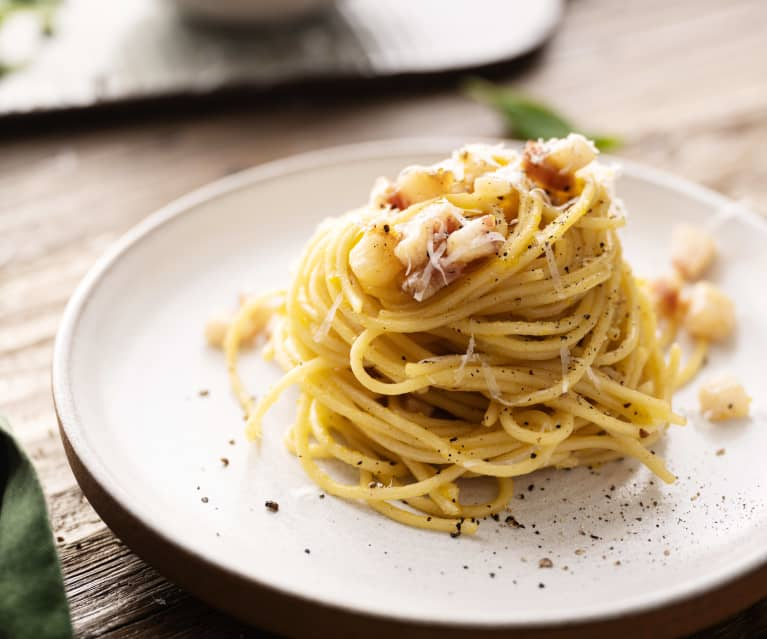

Tesoro Culinario de Italia: Spaghetti alla Carbonara

Los "Spaghetti alla Carbonara" son una delicia de la cocina italiana.
Este plato emblemático combina espaguetis perfectamente cocidos con una rica y cremosa salsa de huevo, queso Pecorino Romano y panceta crujiente.
Cada bocado es una explosión de sabores auténticos y satisfactorios.
Ingredientes
- 320 g de spaghetti de alta calidad
- 150 g de panceta o guanciale (tocino italiano)
- 2 huevos frescos
- 80 g de queso Pecorino Romano rallado
- 1 diente de ajo (opcional)
- Pimienta negra recién molida
- Sal
Modo de preparación
-
Comienza cocinando los spaghetti en agua con sal hasta que estén al dente.
Recuerda que la textura es esencial en la cocina italiana, así que sigue las instrucciones
del paquete y prueba para asegurarte de que estén cocidos adecuadamente.
-
Mientras se cocinan los spaghetti, en una sartén grande, dora la panceta o
guanciale en su propia grasa hasta que esté crujiente y dorada.
Si prefieres, puedes añadir un diente de ajo para dar un toque extra de sabor, pero esto es opcional.
-
En un tazón aparte, bate los huevos y mezcla con el queso Pecorino Romano rallado.
Añade una buena cantidad de pimienta negra recién molida para darle ese característico toque picante.
-
Cuando los spaghetti estén listos, escúrrelos y agrégalos a la sartén con la panceta o guanciale.
Mézclalos bien para que se impregnen de los sabores de la carne.
-
Retira la sartén del fuego y, de inmediato, vierte la mezcla de huevos y queso sobre los spaghetti.
Asegúrate de mezclar rápidamente para que los huevos se cocinen con el calor residual de la pasta y formen una salsa cremosa.
-
Sirve tus "Spaghetti alla Carbonara" en platos individuales, espolvoreados con más queso Pecorino Romano rallado y pimienta negra.